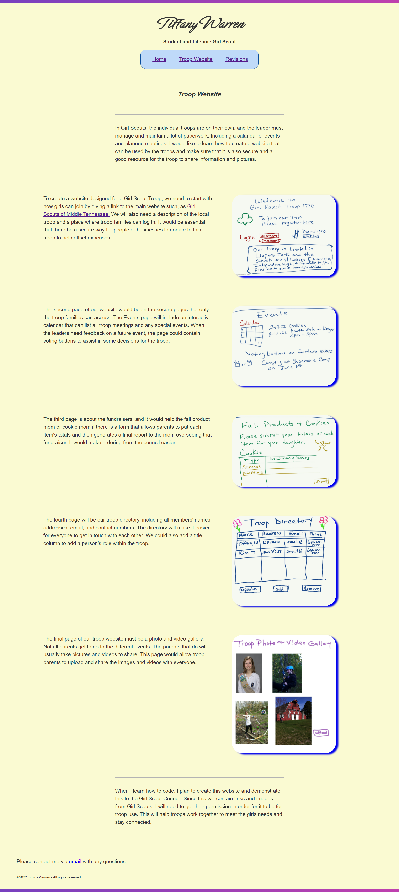

Revisions to this Site
I asked my partner, James Price, and my co-work Brad for feedback on this site. At the time, the troop website page looked like this:

After revising the site to account for this feedback, I ended up with the following layout:
